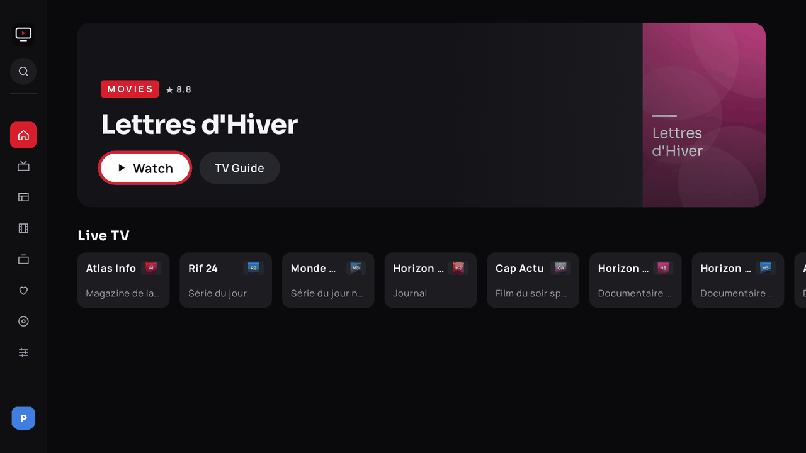
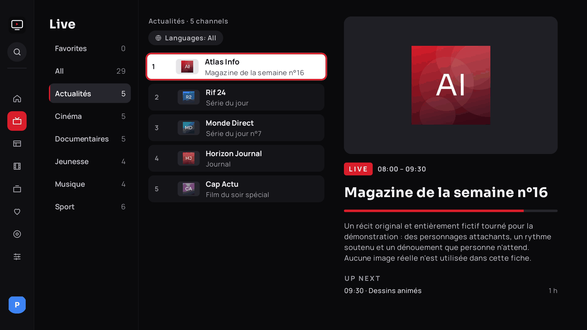
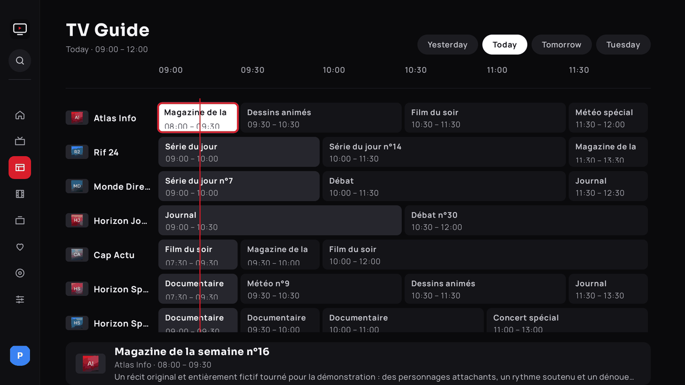
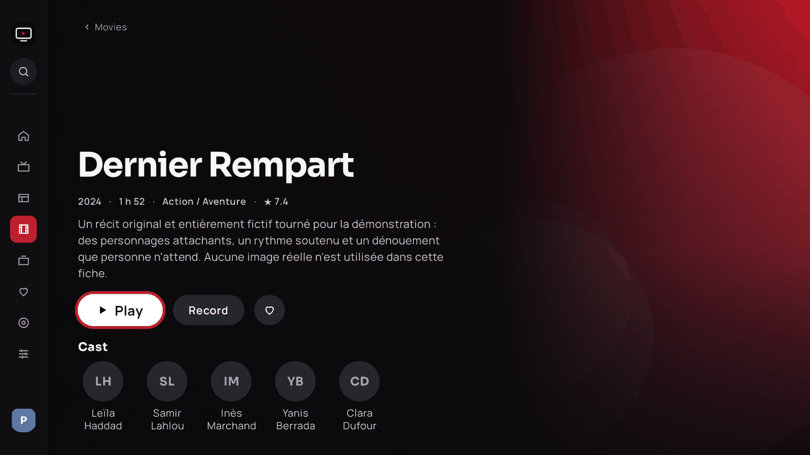
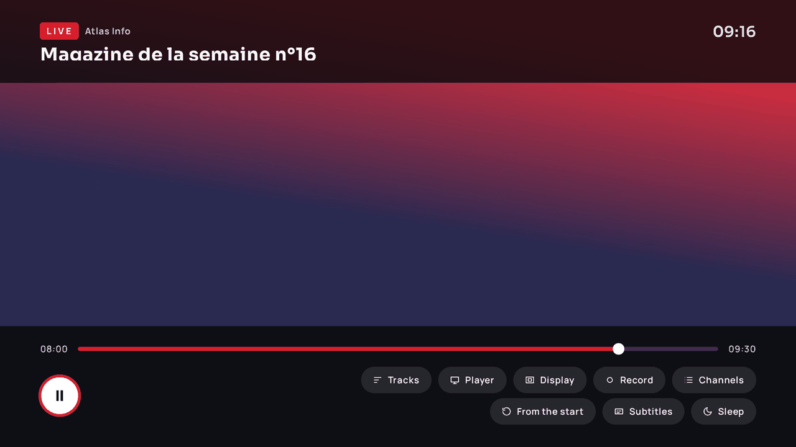

Android TV · Google TV
All your TV in one app.
Ultra TV is a native IPTV player designed for the remote: channels, movies, series, programme guide, replay and live pause. It tunes itself to your device and network.

What Ultra TV does
Smooth live TV, even with tens of thousands of channels
Active categories, language filter from the first source, quality badges, number zapping, recent channels, instant search, and Search from any screen (button at the top of the side rail, remote Search and microphone keys).

Guide, replay and reminders
Time grid, replay from the guide when the source allows it, scheduled reminders and recordings, live pause through a disk buffer.

Rich details, subtitles, profiles
Posters, plots and cast via TMDB, online subtitles with adjustable style, profiles including a Kids profile, Google TV integration (Watch Next, voice search).

Four languages, including mirrored Arabic
Interface in French, English, Spanish and Arabic (right to left), selectable in Settings › Languages, independently of the device language.

Two playback engines
ExoPlayer (Media3) and VLC, with automatic fallback between engines and decoders when a channel will not start. Buffer, quality and decoding adjust themselves to the box; everything stays configurable.

Themes
Dark, light or automatic. The player always stays dark.
Security
Credentials encrypted on the device, no stream address ever shown, cloud pairing by code.
Sleep and comfort
Timer 30 / 60 / 90 min or end of programme, resume playback, built-in updates.
Download
APK 1.1.0
Android 9 or newer. The file always follows the latest published release.
Downloader
On a box without a browser: open the Downloader app, enter the code and confirm.
5248504
Install and set up
On the box
- Allow unknown apps for Downloader (Settings › Security).
- Download the APK with the code above, then install it.
- At first launch choose the source type (Xtream Codes, M3U link, M3U file or From the cloud), enter it, then tick your languages: only the matching categories are downloaded.
With adb
adb connect IP_DE_LA_BOX:5555
adb install -r UltraTV-debug.apkCloud sync
To avoid typing credentials with a remote, manage your sources from a browser at ultratv-config.khalilbenaz.workers.dev (the address is also shown with a QR code in the app, Settings › Sources).
- Create an account on the dashboard and add your sources.
- Choose “Pair a TV”.
- On the box: “From the cloud” (wizard) or Settings › Sources › Sync from the cloud. Enter the 8-character code shown on the TV into the dashboard.
Your credentials are encrypted on the server side; the box gets its own token, revocable from the dashboard. You can also deploy your own Worker (instructions and secrets to define are in the repository, no value is published).
FAQ
Does Ultra TV include channels?
No. It is a player: you bring your own subscription or playlists, which you are entitled to use.
Are my credentials protected?
They are encrypted on the device, never displayed or logged, and stream addresses are never shown.
Which boxes are supported?
Android 9 and later (API 28): Google TV / Chromecast, Mecool, Fire TV by sideload, Android TV sets. A frugal mode switches on by itself on low-memory devices.
A channel will not start, what now?
Ultra TV tries another decoder, then the other engine, on its own. You can also pick the engine and decoding in the player panel.
How do I update?
The app checks GitHub for new releases and offers to install them.